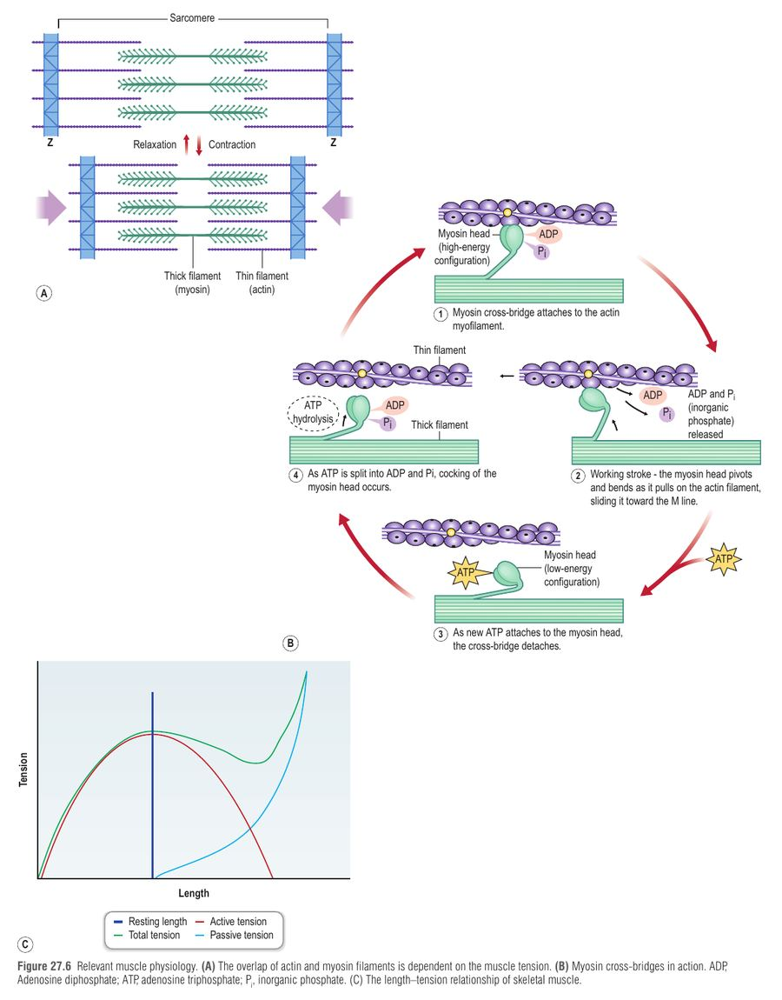
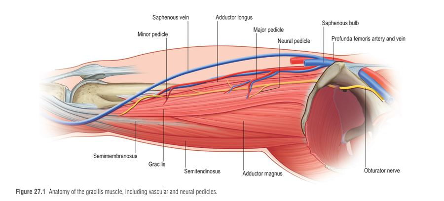
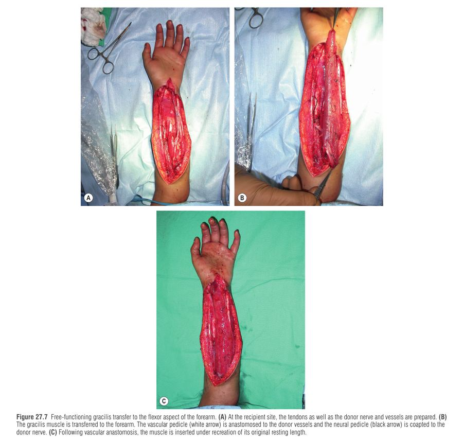
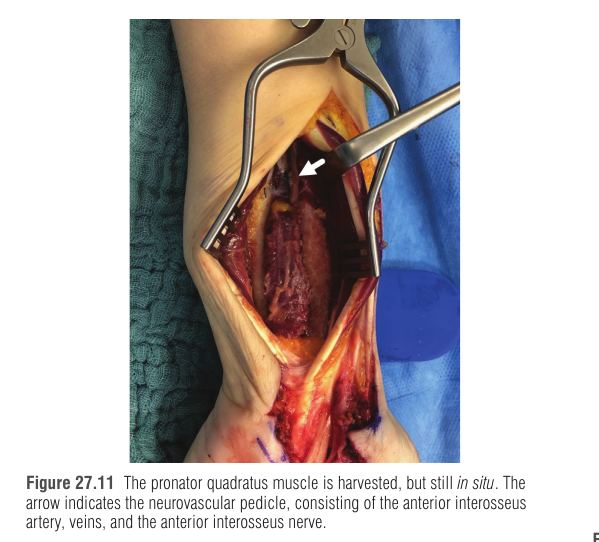

Free-functioning muscle transfer (FFMT) הוא העברה מיקרו-נוירו-וסקולרית של שריר חי ופעיל ממקום רחוק בגוף אל הגפה העליונה, כדי לשחזר פונקציה מרכזית שאבדה לצמיתות (כיפוף/יישור אצבעות, הפשטת-הנגדת אגודל, כיפוף/יישור מרפק, הרחקת כתף) כשאין שום פתרון מקומי. זו פרוצדורה מורכבת, שמצליחה רק עם מטופל מוטיבציוני, מיקרוכירורגיה מדויקת ושיקום ממושך. בחירת מטופל נכונה ושחזור אורך מנוחה (resting length) נכון הם מה שמכריע את התוצאה.
הרעיון: מכיוון שהשריר המועבר מנותק לחלוטין מעצבו ומכלי הדם שלו, הוא תלוי ב-3 דברים חדשים באתר המקבל: עורק+וריד (חיים), עצב מוטורי תורם (פקודה), ו-גיד/עיגון (העברת כוח למפרק). לכן ה"בדיקה לפני" היא בעצם בדיקה שכל שלושת אלה קיימים, ושהמפרקים והרקמה הרכה מוכנים לקבל אותם.
קודם כל מנסים אפשרויות מקומיות: שחזור עצב, העברות עצבים (nerve transfer) או העברות גידים (tendon transfer). FFMT שמור למצבים כמו: פגיעה קשה בגפה, Volkmann's ischemic contracture, כריתת סרקומה נרחבת, פגיעת brachial plexus ותיקה, וכן כוויה חשמלית, גנגרנה גזית ו-post-replant.
| דרישה מוקדמת (Table 27.1) | למה היא קריטית / מה עושים אם חסרה |
|---|---|
| עצב מוטורי, עורק ווריד תקינים באתר המקבל | בלי אלה אין חיים ואין פקודה. חסרים כלי דם: vein graft או AV loop. חסר עצב: ניתוח דו-שלבי עם "בנקאות" שתל עצב (ראו סעיף 3) |
| כיסוי רקמה רכה מתאים לחצי הדיסטלי של השריר | אחרת: קצירת השריר עם skin paddle, הרחבת רקמה (tissue expansion) או פלאפ עורי מקדים |
| מפרקים גמישים וגידים חופשיים | מפרק נוקשה = אין טווח תנועה, גם עם שריר מצוין. קודם פיזיותרפיה/שחרור ניתוחי |
| תחושה טובה ביד, תפקוד אינטרינזי | אינה דרישה מוחלטת (בפלקסוס יש לעיתים פגיעה תחושתית), אך משפרת תוצאה. שוקלים שחזור תחושתי של ה-median nerve |
| שריר אנטגוניסט תקין | השריר המועבר צריך משהו שיאזן אותו |
| מוטיבציה ושיתוף פעולה, אין פתרון פשוט יותר | שיקום אינטנסיבי של שנה-שנתיים; התוצאה המרבית מושגת רק 1–2 שנים אחרי הניתוח |
עדיף שריר אחד לפונקציה אחת (תוצאות טובות יותר). אפשר לשחזר כמה פונקציות עם שריר יחיד (למשל כיפוף מרפק ויישור שורש כף יד), ובאובדן גלובלי של הגפה משתמשים ב-double free muscle transfer (כיפוף מרפק, יישור אצבעות, כיפוף אצבעות).
נעשה שימוש בשרירים רבים (latissimus dorsi, rectus femoris, serratus anterior, gastrocnemius, hemisoleus, FCU, pectoralis major, TFL), אך הגרסיליס (gracilis) הוא הנפוץ ביותר לגפה העליונה. הסיבה היא שהוא עומד ברוב הקריטריונים האידיאליים:
סיבי שריר נמתחים עד ~150% מאורך המנוחה ומתכווצים עד ~40% ממנו. בשריר strap (גרסיליס, rectus abdominis) הסיבים מקבילים לציר, ולכן האקסקורסיה של השריר ≈ זו של הסיבים: טווח גדול, כוח בינוני. בשריר pennate (rectus femoris, gastrocnemius) סיבים קצרים בזווית לטנדון: כוח גדול, טווח קטן. לכן לכיפוף אצבעות (אקסקורסיה ~7 ס"מ; מיישרים ~5 ס"מ) מעדיפים strap. אמפליטודה של גרסיליס: 12–16 ס"מ (~40% מאורך המנוחה).
| תכונה | Strap (גרסיליס) | Pennate (rectus femoris) |
|---|---|---|
| כיוון סיבים | לאורך ציר השריר | בזווית לציר כוח |
| אקסקורסיה | גדולה | קטנה |
| כוח | בינוני | גבוה |
| מתאים ל | כיפוף אצבעות (טווח רחב) | כשנדרש כוח |

השריר המועבר מגיע מנותק לגמרי, ולכן צריך "ספק" אקסונים מקומי. קריטריונים: חסרון באתר התורם, מרחק רגנרציה (מקואפטציה ל-neuromuscular junction), מספר סיבים מוטוריים ודמיון פונקציונלי לתנועה המשוחזרת (עצב אגוניסטי).
למה מספר האקסונים כל כך חשוב? רק מיעוט מסיבי העצב הם מוטוריים: גם ב"עצבים מוטוריים טהורים" (accessory, phrenic) לא יותר מ-30% אפרנטיים-מוטוריים, ובעצבי הגפה העליונה (axillary, radial, ulnar, median, musculocutaneous) פחות מ-10%. כשהשריר מקבל מעט נוירונים, חלק מהסיבים נשארים מנותקים ← אטרופיה וחוסר כוח. מכאן האסטרטגיות: עצב בקוטר וטעינה מתאימים, קואפטציה ללא מתח, בלי שתלי עצב, ומרחק רגנרציה קצר. בנוסף, אוכלוסיית האקסונים המחדשת קובעת את תכונות השריר (סיבי slow/fast) ואת יכולת השליטה: מוטונוירון שהיה שייך לפונקציה אחרת צריך ארגון מחדש במוח, וזה יורד בחדות עם הגיל.
| פונקציה | עצב תורם מועדף | חלופות |
|---|---|---|
| כיפוף אצבעות | Anterior interosseous, ענפי median ל-FDS או ענפי ulnar ל-FDP | ענפי radial; תורמים פרוקסימליים דרך שתלי עצב |
| יישור אצבעות ושורש כף יד | ענפי radial | ענפי median; שתלי עצב |
| כיפוף מרפק | Musculocutaneous | thoracodorsal, medial pectoral, spinal accessory, intercostals, C7 קונטרלטרלי |
| יישור מרפק | radial פרוקסימלי | כנ"ל |
| הרחקת כתף | axillary | כנ"ל |
כשאין עצב מקומי (פלקסוס, Volkmann): ניתוח דו-שלבי. בשלב א' מחברים קצה פרוקסימלי של שתל עצב (למשל sural) לעצב תורם רחוק (למשל spinal accessory), מנהרים (tunneling) לאתר המקבל ו"בונקאים" אותו בלי יעד. ממתינים לצמיחת אקסונים (1–2 מ"מ ליום) עד Tinel חיובי בקצה הדיסטלי, ורק אז מבצעים את העברת השריר. אם יש ספק לגבי כדאיות העצב: חשיפה וביופסיה לספירת אקסונים מיאליניים.
שרשרת הניתוח בקצרה.
החתכים מתוכננים לגישה טובה לכלי דם, עצב תורם ונקודות עיגון, בלי לחצות את מסלול הגידים המחליקים (למניעת צלקת). אם נדרש שתל עור – מניחים אותו מעל החלק הפרוקסימלי של השריר שבו האקסקורסיה קטנה. ההחלטה הסופית להמשיך היא תוך-ניתוחית.
Skin paddle (אופציונלי): רק מעל שני-שלישים פרוקסימליים (אחרת אספקת הדם לא אמינה); אליפסה אנכית; להימנע מפגיעה בפרפורטורים שמעל העורק הדומיננטי; לתפור את שולי הפאדל לפאשיה נגד גזירה. חיסרון: עבה מהעור המקבל והמראה לא אסתטי (לעיתים revision מאוחר). חלופה: שריר בלבד + שתל עור על החצי הפרוקסימלי.
חתך 8–10 ס"מ בצומת שליש עליון/אמצעי של הירך, 2 ס"מ מאחורי הקו המסומן. שומרים את הפאשיה לתיקון (למניעת הרניית שריר).


אותם עקרונות, אקסקורסיה מעט קטנה יותר. עצב תורם: posterior interosseous nerve (מזוהה בצאתו מה-supinator; עם stimulator מבחינים בענפים; אם אין תפקוד – ביופסיה). עורק מקבל: posterior interosseous, radial recurrent או radial (end-to-side). גידי המיישרים מחוברים צד-לצד ב-cascade נורמלי.
הנגדה מבוצעת בדרך כלל בהעברת גידים; FFMT לצעירים תובעניים כשאין אפשרות אחרת (למשל ענף thenar מוטורי שמסתיים בצלקת). ה-pronator quadratus (PQ) מתאים בגודל, בכוח ובכיוון סיבים לחיקוי שרירי ה-thenar. ה-pedicle: עורק anterior interosseous + ורידים + AIN. קצירה בחתך יחיד, ללא חסרון תפקודי כל עוד ה-pronator teres תקין. העצב: חיבור ישיר לענף thenar אם קיים, אחרת ל-motor branch של abductor digiti minimi מה-ulnar העמוק. כלי דם: radial artery (end-to-side) או הענף ה-palmar שלה. עיגון: חלק אולנרי לשולי flexor retinaculum החתוך, חלק רדיאלי ל-adductor pollicis aponeurosis. חשוב ליצור מחדש את רוחב המנוחה של השריר. ההחלטה לבצע PQ מתקבלת לעיתים רק תוך-ניתוחית.

תורם נפוץ: גרסיליס, אחריו latissimus dorsi ו-rectus femoris. כלי דם: thoracoacromial או brachial. עצב: musculocutaneous (חלופות: ענפי ulnar/median, intercostals, spinal accessory). כדי להשיג כיפוף שימושי (> M3) נדרש מומנט מספיק, והוא עולה עם המרחק בין ההוספה לציר הסיבוב, ולכן מקבעים את ההוספה הכי דיסטלית שאפשר (לא בהכרח במקום הביספס המקורי). עיגון פרוקסימלי מועדף: clavicle, או coracoid, humerus פרוקסימלי או צלע שנייה.
| סוג | סיבוך | מנגנון / טיפול |
|---|---|---|
| מוקדם | פגיעה וסקולרית (הקריטי ביותר) | טרומבוזה, קינקינג או לחץ על האנסטומוזה, בשעות-ימים הראשונים. אחרי 4–5 שעות איסכמיה ייתכן שלא ניתן להציל. חקירה מוקדמת של ה-pedicle חיונית. שריר קבור ← Doppler בלבד, ולכן skin paddle / flow coupler |
| זיהום, ריפוי איטי | מצע צלקתי, פצעים פתוחים זמן ממושך. אנטיביוטיקה פרופילקטית. ריפוי איטי לא מעכב שיקום | |
| מאוחר | חוסר כוח | עצבוב לא מספיק (מקור אקסונים או קואפטציה לקויה). אבחון תוך 6–12 חודשים מאפשר העברת עצב משנית כל עוד השריר פתוח לעצבוב |
| הידבקויות | מגבילות גלישת גיד/אקסקורסיה ← tenolysis (לאחר עצבוב מספק לשיקום אינטנסיבי) | |
| Wrist flexion contracture | השריר החוזר מתחזק ומנצח את האנטגוניסטים. מניעה: סד מוקדם ושיקום מאוזן; בילדים סד לילה בגלל גדילה שלדית |
ניטור פרפוזיה רציף מתקדם; גירוי חשמלי קצר (30–60 דקות, 20 Hz) של העצב הפרוקסימלי לקואפטציה, שמעודד את שלב צמיחת האקסונים הראשוני (התועלת הפונקציונלית בהעברת שריר חופשית עדיין לא הוכחה); ומתן מקומי ממושך של tacrolimus (FK506) באתר התיקון, שהראה בבעלי חיים האצת רגנרציה.
P – Pedicle: עורק+וריד תקינים, אנסטומוזה בלי מתח
L – Length: שחזור resting length (תפרי 5 ס"מ)
A – Axons: עצב תורם מספיק גדול וקרוב, קואפטציה ללא מתח
N – Neuro-rehab: שיקום וניוד, מניעת contracture
סיפור: דמיינו את הגרסיליס כרקדנית רזה ("Gracilis = graceful") שמגיעה להופעה בזרוע חדשה. כדי להופיע היא צריכה דלק (כלי דם), חוט מיקרופון (עצב), תחפושת במידה בדיוק (אורך מנוחה) ומאמן (שיקום). אם אחד מהם חסר, ההצגה נכשלת.
ארבעה עמודים תומכים בגג אחד: כל עמוד חסר = קריסה.
גבר בן 28 עם פגיעת פלקסוס ברכיאלי ישנה (18 חודשים), ללא כיפוף מרפק פעיל (M0). ה-musculocutaneous אינו זמין, ובגפה אין העברות עצב או גידים אפשריים. המפרקים גמישים, התחושה ביד סבירה, המטופל מוטיבציוני. מתוכננת העברת גרסיליס חופשי לכיפוף מרפק. תוך-ניתוחית, אחרי חיבור כלי הדם, השריר ורוד, ונקבעים הוספה ועיגון.